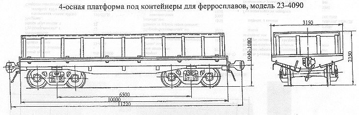

Назначение: для перевозки контейнеров для ферросплавов
Параметры
| Номер проекта | 4090.00.000 |
| Технические условия | 4090.00.000ТТ |
| Модель вагона | 23-4090 |
| Тип вагона | |
| Изготовитель | АО "Днепровагонмаш" |
| Грузоподъемность, т | 109,5 |
| Масса тары вагона, т | 30,5 |
| Нагрузка: статическая осевая, кН(тс) |
343(35) |
| погонная, кН/м(тс/м) | 122,3(12,5) |
| Скорость, км/ч: по магистральным путям в порожнем состоянии |
100 |
| по путям промышленных предприятий | 35 |
| Габарит | 1-Т |
| База вагона, мм | 6500 |
| Длина, мм: по осям сцепления автосцепок |
11220 |
| по концевым балкам рамы | 10000 |
| Ширина максимальная, мм | 3150 |
| Высота от уровня верха головок рельсов максимальная, мм | 2350 |
| Количество осей, шт. | 4 |
| Модель 2-осной тележки | 18-477 |
| Наличие переходной площадки | нет |
| Наличие стояночного тормоза | есть |
| Высота бортов, мм | 1020 |
| Количество поддонов, шт.: | 5 |
| Габариты поддона, мм: длина |
2720 |
| ширина | 1890 |
| высота | 300 |
| Год постановки на серийное производство | 1994 |
| Возможность установки буфера | нет |